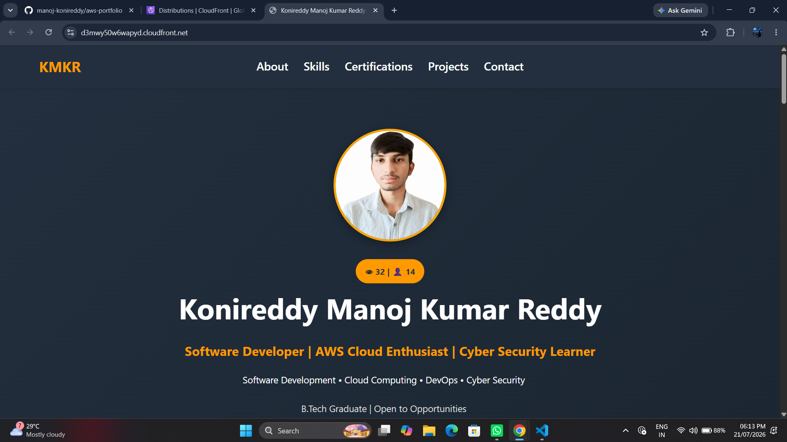
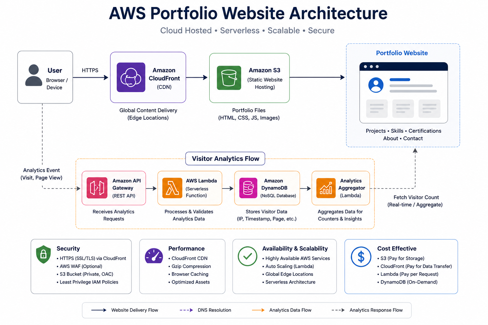

Amazon S3 • CloudFront • Lambda • API Gateway • DynamoDB
A responsive professional portfolio website designed and deployed on AWS to showcase projects, technical skills, certifications, and experience. The website is globally delivered through Amazon CloudFront and includes serverless visitor analytics powered by AWS Lambda, API Gateway, and Amazon DynamoDB.
Designed and developed a fully responsive portfolio website to present projects, certifications, technical skills, and contact information in a professional and user-friendly interface.
The portfolio is hosted on Amazon S3 and globally delivered through Amazon CloudFront, providing secure, scalable, and high-performance content delivery without managing traditional servers.
A serverless visitor analytics system built using Amazon API Gateway, AWS Lambda, and Amazon DynamoDB records website visits and displays real-time statistics directly on the portfolio homepage.

The homepage provides an overview of my technical skills, featured projects, certifications, and contact information. It is designed with a fully responsive layout and modern UI to deliver a consistent user experience across desktop, tablet, and mobile devices.

The portfolio website is hosted on Amazon S3 and delivered globally through Amazon CloudFront. When visitors access the website, the static content is served securely over HTTPS. A JavaScript-based analytics request is sent to Amazon API Gateway, which invokes an AWS Lambda function to update and retrieve visitor statistics stored in Amazon DynamoDB before returning the latest counts to the website.
Fully responsive design optimized for desktop, tablet, and mobile devices with a modern user interface.
Hosted on Amazon S3 and globally distributed through Amazon CloudFront for fast, reliable, and secure content delivery.
Integrated visitor analytics system that records page visits using Amazon API Gateway, AWS Lambda, and Amazon DynamoDB without requiring traditional backend servers.
Designed a responsive interface that provides a consistent experience across desktop, tablet, and mobile devices while maintaining fast loading performance.
Integrated multiple AWS services including Amazon S3, CloudFront, API Gateway, Lambda, and DynamoDB to build a secure and scalable cloud-native portfolio solution.
Gained hands-on experience with Amazon S3, CloudFront, API Gateway, AWS Lambda, DynamoDB, IAM, and static website hosting. Improved understanding of serverless architectures, CDN deployment, cloud security, and frontend integration with AWS services.